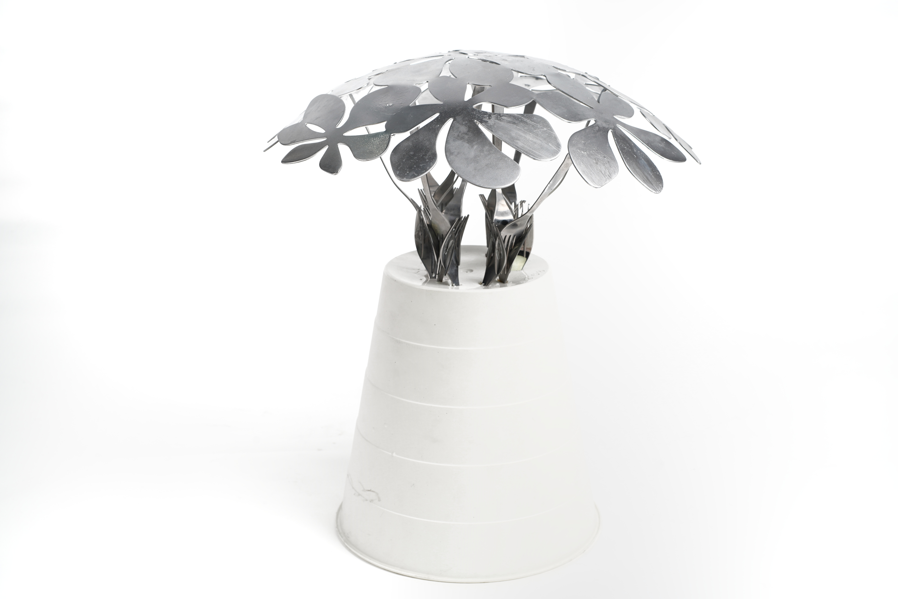

BOUQUET

我认为黑客精神是转换人们看待事物的常规思路、同时探究一些材料的物理特性极端点。常规认识中的凳子是一个可以休息的物件，带给人的体验是温和的、钝的、包容的.
我所设计的由不锈钢果盘作为凳面，不锈钢叉子插接作为支撑的凳子是尖锐的、冷硬的，与人们常规认识的凳子截然相反。同时，通过叉子之间连接作为凳子的支撑结构挑战了该不锈钢材料的韧性与硬度。整个凳子由聚丙烯塑料和不锈钢材料组成，简单淳朴。
我认为黑客精神是转换人们看待事物的常规思路、同时探究一些材料的物理特性极端点。常规认识中的凳子是一个可以休息的物件，带给人的体验是温和的、钝的、包容的.
我所设计的由不锈钢果盘作为凳面，不锈钢叉子插接作为支撑的凳子是尖锐的、冷硬的，与人们常规认识的凳子截然相反。同时，通过叉子之间连接作为凳子的支撑结构挑战了该不锈钢材料的韧性与硬度。整个凳子由聚丙烯塑料和不锈钢材料组成，简单淳朴。